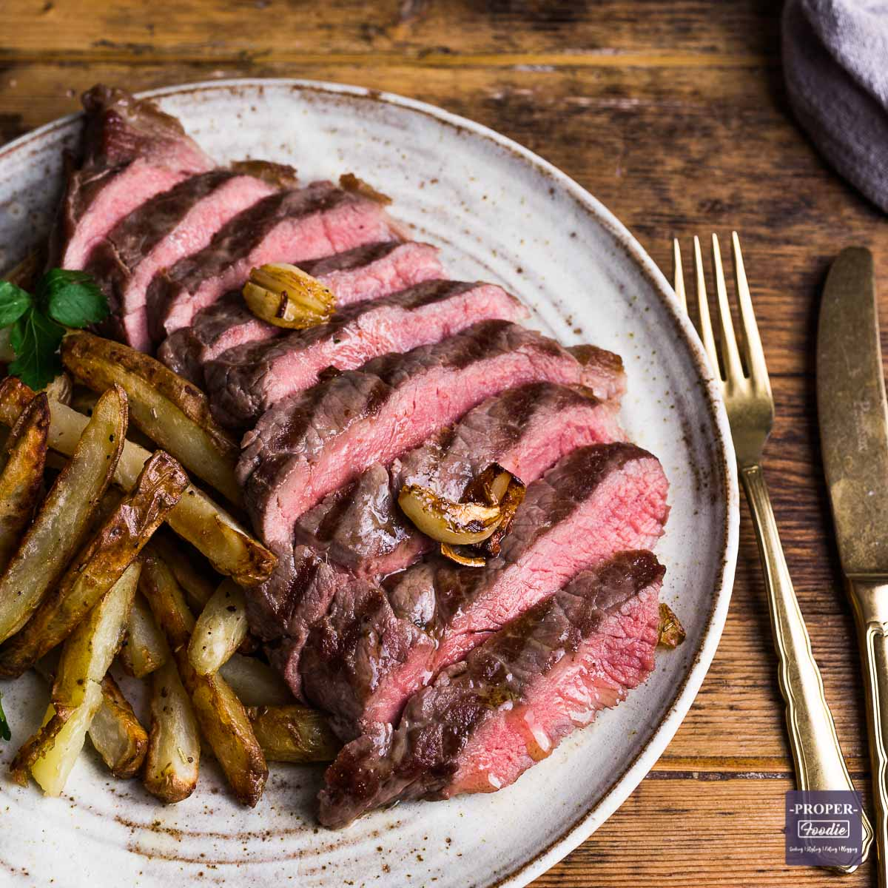

Steak Recipe

Description
Imagine a sizzling hot and perfectly seared steak, juicy and tender, with a caramelized crust that's bursting with flavor. The aroma of the beef, cooked to your preference, fills the air, enticing your senses and making your mouth water. With each bite, you're rewarded with the rich, savory taste of the meat, and the juicy texture that melts in your mouth. The flavors are balanced and complemented by the natural seasoning of the meat, enhanced by a side of sautéed mushrooms or a dollop of herb butter. This steak is the epitome of indulgence and sophistication, and it's a dish that's sure to satisfy and impress anyone lucky enough to enjoy it.
Ingredients
- 2 boneless ribeye steaks, about 1 inch thick
- 2 tablespoons olive oil
- 2 cloves garlic, minced
- Salt and freshly ground black pepper
- Optional: herb butter, sautéed mushrooms, or steak sauce for serving
Steps
- Preheat the grill to high heat.
- In a small bowl, mix together the olive oil and minced garlic.
- Rub both sides of the steaks with the garlic oil, then season generously with salt and pepper.
- Place the steaks on the hot grill and cook for 4-5 minutes per side for medium-rare doneness.
- Remove the steaks from the grill and let them rest for a few minutes to allow the juices to redistribute.
- Slice the steak against the grain and serve hot, optionally topped with herb butter, sautéed mushrooms, or steak sauce.
Return To Homepage